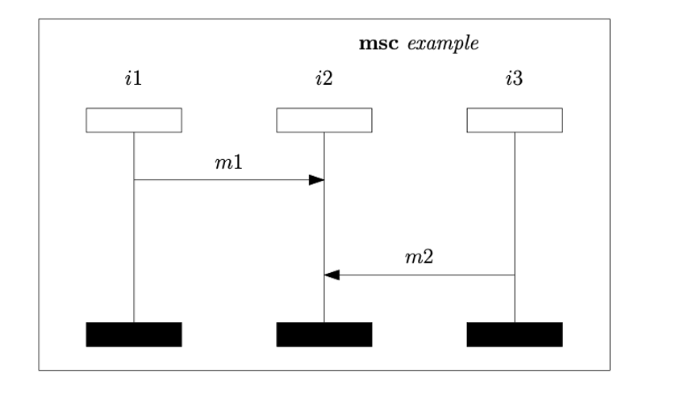
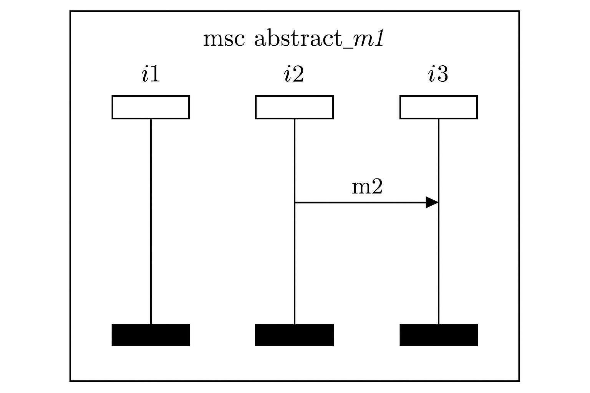
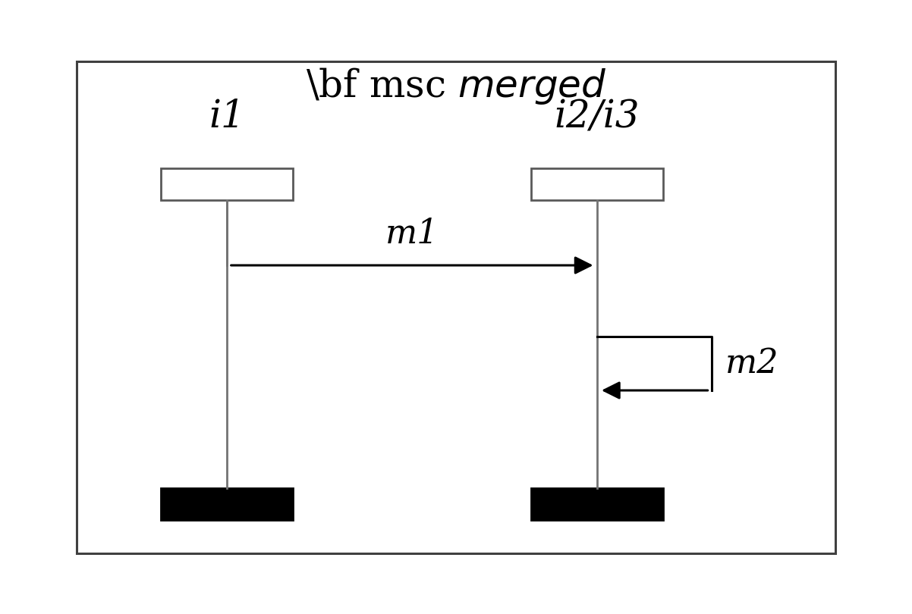
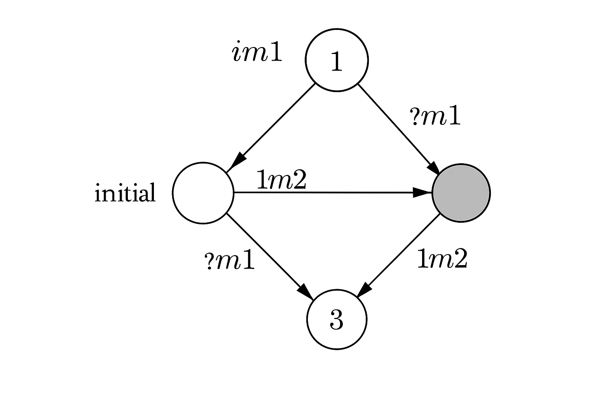

Annotations / GPT-5.4-Thinking Deep / Example 2.docx
Hi, consider this picture from a Message Sequence Chart. Identify the events in this diagram.

In this Message Sequence Chart (MSC), the visible events are the message send and message receive actions on the instance lifelines.
Instances
i1
i2
i3
Messages
m1 goes from i1 to i2
m2 goes from i3 to i2
Events in the diagram
On instance i1
Send of m1
Event: send(m1)
This is the point where i1 sends message m1 to i2.
On instance i2
Receive of m1
Event: receive(m1)
This is where i2 receives m1 from i1.
Receive of m2
Event: receive(m2)
This is where i2 receives m2 from i3.
On instance i3
Send of m2
Event: send(m2)
This is the point where i3 sends m2 to i2.
A compact event list
You could label the events as:
e1 = send(m1) on i1
e2 = receive(m1) on i2
e3 = send(m2) on i3
e4 = receive(m2) on i2
Ordering relations visible in the chart
Because time flows top to bottom on each lifeline:
e1 < e2 (sending m1 happens before receiving m1)
e3 < e4 (sending m2 happens before receiving m2)
On i2, e2 < e4 (the receive of m1 occurs before the receive of m2)
So the main ordering is:
send(m1) < receive(m1) < receive(m2)
send(m2) < receive(m2)
``
and there is no order shown between:
send(m1) on i1
send(m2) on i3
unless an additional constraint is given.
Final answer
The diagram contains four main events:
i1 sends m1
i2 receives m1
i3 sends m2
i2 receives m2
If you want, I can also express the same MSC as a partial order, a trace, or in MSC/UML notation.
Task type: Identifying events
Judgment: Correct.
Question:
What is the correct ordering between sending m1 and sending m2?
Answer:
The correct ordering between sending m1 and sending m2 is:
They are not ordered
There is no causal or visual ordering constraint in the MSC between:
send(m1) on i1
send(m2) on i3
Because these two events occur on different instance lifelines and there is no message or vertical order relation connecting them directly, they are incomparable in the partial order of the chart.
What is ordered in the diagram?
From the MSC, the following orderings are clear:
send(m1) < receive(m1)
send(m2) < receive(m2)
On lifeline i2: receive(m1) < receive(m2)
So the constraints are:
send(m1) < receive(m1) < receive(m2)
send(m2) < receive(m2)
``
But there is no constraint saying either:
send(m1) < send(m2)
``
or
send(m2) < send(m1)
``
Interpretation
So, in MSC semantics:
send(m1) and send(m2) are concurrent / independent / unordered
either one may happen first in a valid linearization, as long as the other ordering constraints are respected
Example valid total orders
Both of these are valid:
send(m1), receive(m1), send(m2), receive(m2)
``
and
send(m2), send(m1), receive(m1), receive(m2)
``
The second one is valid because the only requirement on i2 is:
receive(m1) before receive(m2)
``
Final answer
There is no fixed ordering between sending m1 and sending m2; they are unordered (concurrent) in this MSC.
If you want, I can also draw the partial order (Hasse-style dependency graph) for the four events.
Task type: Identifying event orders
Judgment: Correct.
Question:
What is the correct ordering between receiving m1 and receiving m2?
Answer:
The correct ordering is:
receive(m1) < receive(m2)
Why?
Both events occur on the same instance lifeline i2, and in a Message Sequence Chart, events on a single lifeline are ordered from top to bottom.
In the diagram:
the reception of m1 on i2 is drawn higher
the reception of m2 on i2 is drawn lower
So the ordering is:
receive(m1) before receive(m2)
``
Final answer
m1 is received before m2 is received.
If you want, I can now list all event order constraints in the MSC as one complete partial order.
Task type: Identifying event orders
Judgment: Correct.
Question:
Based on the diagram above, generate a message sequence chart in which message m1 is abstracted away. Please produce the resulting MSC after abstracting from m1.
Yes — if we abstract away message m1, then both of its associated events are removed:
send(m1) on instance i1
receive(m1) on instance i2
What remains is only the communication for m2:
send(m2) on i3
receive(m2) on i2
Resulting MSC after abstracting from m1
Informally
i1 remains as an instance but has no events
i2 only contains the reception of m2
i3 only contains the sending of m2
ASCII-style MSC
i1 i2 i3
| | |
| | |
| |<--------------| m2
| | |
| | |
``
Since MSC arrows are usually drawn from sender to receiver, the same chart can also be written more explicitly as:
i1 i2 i3
| | |
| | |
| |<----- m2 -----|
| | |
Event structure of the abstracted MSC
The remaining events are:
e1 = send(m2) on i3
e2 = receive(m2) on i2
with the ordering:
send(m2) < receive(m2)
There are no other event-order constraints left after removing m1.
Compact formal representation
If the original MSC had event set
{ send(m1), receive(m1), send(m2), receive(m2) }
``
then after abstraction from m1, the resulting event set is:
{ send(m2), receive(m2) }
``
with partial order:
send(m2) < receive(m
Final resulting MSC
msc abstract_m1 {
instance i1;
instance i2;
instance i3;
i3 -> i2 [label="m2"];
}
``
If you want, I can also produce the same abstracted MSC in standard graphical notation or explain whether i1 should be removed entirely under a particular MSC semantics.
Please draw the image of the MSC.

Task type: Abstraction
Judgment: Correct
Question:
Question:
Consider the original MSC given below. Merge instance i2 and i3; produce the message sequence chart after merging. Please draw the resulting MSC.
Answer:
Drawing merged MSC and considering vertical order
I need to draw the resulting message sequence chart (MSC) based on merging instances i2 and i3. After merging, m2 becomes an internal message, so I'll represent it as an internal event on the merged lifeline. I'll also ensure proper vertical order: i2's m1 receive is above m2 receive.
Clarifying message order after merge
After merging, m2 becomes both a send and a receive on the same lifeline. The order might be: receive m1, send m2, then receive m2. For the merged lifeline, the message from i3 to i2 could have some interleaving, with the option for non-deterministic ordering between events. I’ll need to draw this sequence out.
Creating MSC drawing with merged instance
I’ll create the MSC after merging, drawing i1 and the merged i23. m1 will go from i1 to the merged instance, and m2 will appear as a self-message below. I could generate the diagram using Python, making it as a PNG and providing a link to the resulting file.
Generating MSC after instance merge
bash -lc python3 - <<'PY'
import matplotlib.pyplot as plt
from matplotlib.patches import Rectangle, FancyArrowPatch, PathPatch
from matplotlib.path import Path
fig, ax = plt.subplots(figsize=(7.5,5.0))
ax.set_xlim(0, 10)
ax.set_ylim(0, 7)
ax.axis('off')
# outer frame
ax.add_patch(Rectangle((0.7,0.55), 8.6, 5.9, fill=False, linewidth=1.1, color='0.25'))
ax.text(5.0, 6.15, r'\bf msc $merged$', ha='center', va='center', fontsize=18, family='serif')
# positions
x1=2.4; x23=6.6
yt=5.2; yb=1.0
# labels and heads/foots
for x,label in [(x1,'i1'),(x23,'i2/i3')]:
ax.text(x, 5.55, label, ha='center', va='bottom', fontsize=18, family='serif', fontstyle='italic')
ax.add_patch(Rectangle((x-0.75,4.78),1.5,0.38, fill=False, linewidth=1.0, edgecolor='0.35'))
ax.plot([x,x],[4.78,1.33], color='0.45', linewidth=1.0)
ax.add_patch(Rectangle((x-0.75,0.95),1.5,0.38, facecolor='black', edgecolor='black'))
# m1 i1 -> merged
ym1=4.0
ax.plot([x1, x1], [4.78, ym1], color='0.45', linewidth=1.0)
ax.add_patch(FancyArrowPatch((x1,ym1),(x23,ym1), arrowstyle='-|>', mutation_scale=18, linewidth=1.1, color='black'))
ax.text((x1+x23)/2, ym1+0.18, 'm1', ha='center', va='bottom', fontsize=16, family='serif', fontstyle='italic')
# self message m2 on merged instance, below m1 receive
# draw loop to right with arrow back to lifeline lower down
ys=3.15; yr=2.5
verts=[(x23,ys),(x23+1.25,ys),(x23+1.25,yr),(x23,yr)]
codes=[Path.MOVETO, Path.CURVE4, Path.CURVE4, Path.LINETO]
# use simple polyline + arrow final segment
ax.plot([x23,x23+1.3,x23+1.3],[ys,ys,yr], color='black', linewidth=1.1)
ax.add_patch(FancyArrowPatch((x23+1.3,yr),(x23,yr), arrowstyle='-|>', mutation_scale=18, linewidth=1.1, color='black'))
ax.text(x23+1.45, (ys+yr)/2, 'm2', ha='left', va='center', fontsize=16, family='serif', fontstyle='italic')
# small event ticks on merged lifeline? no
plt.savefig('/mnt/data/merged_msc_i2_i3.png', dpi=200, bbox_inches='tight', facecolor='white')
PY

Task type: Abstraction
Judgment: Incorrect.
Question:
Consider the original MSC given below. Please produce the set of all of its traces.
For the original MSC, let the events be:
s1 = send(m1)on i1
r1 = receive(m1)on i2
s2 = send(m2)on i3
r2 = receive(m2)on i2
1) Partial-order constraints from the MSC
From the diagram, the ordering constraints are:
s1 < r1(a message must be sent before it is received)
s2 < r2
r1 < r2(both receptions are on lifeline i2, and m1is received above m2)
So the partial order is:
s1 < r1 < r2, s2 < r2
This implies that r2must occur after all the other events.
2) All traces (all linearizations)
A trace is any total ordering of the four events that respects the above constraints.
Since r2must be last, we only need to order:
s1
r1
s2
subject to the constraint s1 < r1.
That gives exactly three possibilities:
$$\begin{matrix} t_{1} & = \langle s_{1},\ r_{1},\ s_{2},\ r_{2}\rangle \\ t_{2} & = \langle s_{1},\ s_{2},\ r_{1},\ r_{2}\rangle \\ t_{3} & = \langle s_{2},\ s_{1},\ r_{1},\ r_{2}\rangle \end{matrix}$$
3) Final set of traces
$$\boxed{Traces(MSC) = \left\{ \langle send(m1),\ receive(m1),\ send(m2),\ receive(m2)\rangle,\ \langle send(m1),\ send(m2),\ receive(m1),\ receive(m2)\rangle,\ \langle send(m2),\ send(m1),\ receive(m1),\ receive(m2)\rangle \right\}}$$
4) Compact notation
If we abbreviate:
s1 = !m1
r1 = ?m1
s2 = !m2
r2 = ?m2
then:
$$\boxed{\left\{ \langle!m1,\ ?m1,\ !m2,\ ?m2\rangle,\ \langle!m1,\ !m2,\ ?m1,\ ?m2\rangle,\ \langle!m2,\ !m1,\ ?m1,\ ?m2\rangle \right\}}$$
If you want, I can also give the Hasse diagram / dependency graph for this MSC, or explain how these traces change under synchronous versus asynchronous message semantics.
Task type: Traces
Judgment: Correct.
Please draw a labelled transition system that has the same traces as the MSC. Please produce one static picture, no interactive visualisation.

Task type: LTS
Judgment: Incorrect.